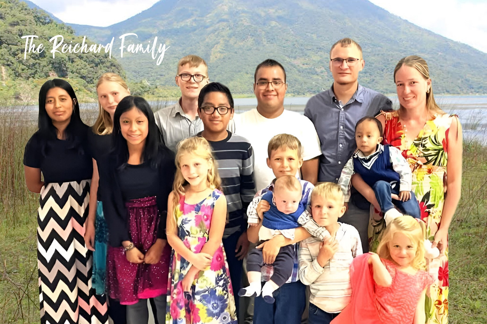

Religion that is pure and undefiled before God, the Father, is this: to visit orphans...and to keep oneself unstained from the world.
~ James 1:27
La religión pura y sin mancha delante de Dios nuestro Padre es esta: atender a los huérfanos y a las viudas en sus aflicciones, y conservarse limpio de la corrupción del mundo.
~ Santiago 1:27
History
Historia
The home was started in 1999 by Rich and Carol Cole. The physical structure was originally in Guatemala city. Tom and Sue Stukenberg took over the home in 2003. After about three years they decided to move out of the city to a safer location and somewhere the children had a yard to play in. After about four years Tom and Sue decided to leave Guatemala and Dave & Deborah Reichard took over the Manos de Compasion ministry.
La casa fue fundada en 1999 por Rich y Carol Cole. La estructura física fue originalmente en la ciudad de Guatemala. Tom y Sue Stukenberg se hicieron cargo de la casa en 2003. Después de unos tres años decidieron mudarse de la ciudad a un lugar más seguro y en algún lugar donde los niños tenían un patio para jugar. Después de unos cuatro años, Tom y Sue decidieron salir de Guatemala y Dave y Deborah Reichard se hicieron cargo del ministerio Manos de Compasion.
Current Leaders
Líderes Actuales

Dave and Deborah Reichard Family
Dave and Deborah are the directors of Manos De Compasión Mission. They started directing Manos De Compasión in 2010. They met in Guatemala when Dave came down to help volunteer and Deborah was living in Guatemala and working with her parents in the Children's home. They have Twelve children - seven biological, five adopted and many foster children they raise. Dave and Deborah were house parents for over 15 years at The Genesis house. Aside from Directing the homes they also Direct the Manos school and Dave pilots the airplane and manages the maintenance of the properties and vehicles. which normally houses twenty to twenty-five children + The Reichard kids.
Dave y Deborah son los directores de la Misión Manos De Compasión. Comenzaron a dirigir Manos De Compasión en 2010. Se conocieron en Guatemala cuando Dave vino para ayudar como voluntario y Deborah vivía en Guatemala y trabajaba con sus padres en el hogar de niños. Tienen doce hijos: siete biológicos, cinco adoptados y muchos hijos adoptivos que crían. Dave y Deborah fueron padres de familia durante más de 15 años en La Casa Génesis. Además de dirigir las casas, también dirigen la escuela de Manos y Dave pilotea el avión y gestiona el mantenimiento de las propiedades y los vehículos. que normalmente alberga de veinte a veinticinco niños + los niños Reichard.
Tom and Sue Stukenberg
Tom and Sue Stukenberg are now the “Grandma and Grandpa” of Hands of Compassion. Tom and Sue were the previous directors of H.O.C. for seven years and are the parents of the current director, Deborah Reichard. They help with everything from cooking, laundry, childcare, Evangelism, to doing court hearings. Tom is a pilot as well and helps do the flights for court hearings, meetings, and getting supplies. Tom and Sue left their dairy farm in Wisconsin to go on the mission field in 1992. They have served mostly in Mexico, the Dominican Republic, and Guatemala. They live in a house they built next to the Esther house.
Tomas y Susan son los “Abuelos” de Manos de Compasión. Tomas y Susan eran los previos directores de M.D.C por siete años y son los padres de la directora actual, Deborah Reichard. Ellos ayudan con todo desde cocina, lavandería, cuidado de niños, Evangelismo, tanto como audiencias. Tomas también es piloto y ayuda con los vuelos para audiencias, reuniones, y compra de víveres. Tomas y Susan dejaron su granja vacuna en Wisconsin para llegar al campo misionero en 1992. Ellos han servido mas en México, La Republica Dominicana, y Guatemala. Ellos viven en una casa que construyeron cerca de casa Ester.
Eric and Noemi Van Drisse
Eric and Noemi Van Drisse, along with their two children Ami and Phinox are the house parents at of The Genesis house since 2023. Eric and Noemi, have been family friends for yours and worked at camps and other places before they came to Hands of Compassion. The Van Drisse family are originally from Wisconsin, USA. Aside from being the house parents at the Genesis house, Eric helps with driving, general maintenance, English classes and several other things and Noemi helps cooking, facilitates craft times, and several other things.
Eric y Noemi Van Drisse, junto con sus dos hijos, Ami y Phinox, son los padres de familia de La casa Génesis desde 2023. Eric y Noemi han sido amigos de la familia suya y trabajaron en campamentos y otros lugares antes de llegar a Hands of Compassion. La familia Van Drisse es originaria de Wisconsin, EE. UU. Además de ser los padres de familia en la casa Génesis, Eric ayuda con la conducción, el mantenimiento general, las clases de inglés y varias cosas más y Noemi ayuda con la cocina, facilita los tiempos de manualidades y varias cosas más.
Darwin and Yecenia Aristando Hernández
Darwin and Yessi Hernandez started as house parents at The Esther house in 2020. Before coming to H.O.C., Darwin and Yessi were house parents for seven years at a home for girls. Darwin and Yessi are from Zacapa, Guatemala. Aside from being a house parent, Darwin helps with driving and repairs of cars and houses as well as many other things. Yessi is a great counselor and intercessor.
Darwin y Yessi Hernandez iniciaron su labor como padres de La Casa Esther en 2020. Antes de llegar a M.D.C, Darwin y Yessi eran padres de casa por siete años en un Hogar de niñas. Darwin y Yessi son de Zacapa, Guatemala. Tanto como ser padres de casa, Darwin ayuda con manejando y reparación de los vehículos y las casas entre otras cosas. Yessi consuela y intercede por los niños.
Hector and Laura Flores Family
Hector and Laura Flores, along with their children Melani, Dulce, and Isaac our the house parents at The Love and Hope House since 2021. Hector, Laura, and their children served at another children home for over nine years before they came to Hands of Compassion. The Flores' are originally from Guatemala City. Hector helps with driving, general maintenance, and baking and several other things. Laura helps plan events and facilitates get togethers.
Hector y Laura Flores, junto con sus hijos Melani, Dulce, y Isaac, son los padres de La Casa Amor y Esperanza desde 2021. Antes de estar con Manos de Compasion trabajaron mas que nueve años en otra casa hogar. Son originarios de la Ciudad de Guatemala. Hector tambien ayuda en areas de manejo, mantenimiento, y panaderia entre otros. Laura ayuda a coordinar nuerstos eventos y reuniones.
Micah Leier
Micah is the house dad of The Meshach House. He has been working full time with Manos De Compasión since 2012. Micah has been with his family in Guatemala since 2000. In the past he has served as our all-around fix it guy with occasional times of being a babysitter, cook and anything else Hands of Compassion needed.
Micah es el padre de La Casa Mesac. Ha estado trabajando a tiempo completo con Manos De Compasión desde 2012. Micah ha estado con su familia en Guatemala desde 2000. En el pasado, se desempeñó como nuestro reparador integral, con ocasiones ocasionales como niñera, cocinera y cualquier otra cosa que podría servirle a Manos de Compasión.
How To Support Us
Como Apoyarnos
Your donations are always appreciated. Whether in the form of your time, your items, or your finances we want to thank everyone for their support in this ministry over the years. If you are interested in donating please refer to the information below.
Sus donaciones siempre son apreciadas. Ya sea en la forma de su tiempo, sus artículos o sus finanzas queremos agradecer a todos por su apoyo en este ministerio a través de los años. Si está interesado en donar, consulte la siguiente información.
Give Online
You can support us financially online through EquipNet. EquipNet gives you the options to send via EFT (Electronic bank transfers), or with a credit/debit card (3% charge). To donate appreciated stock, please contact EquipNet at accounting@equipnet.org. Follow quick and easy instructions given on their page to indicate how often and how much you would like to give. EquipNet. If you have any questions regarding your online sponsorship, please contact EquipNet directly at (925) 478-4320 or e-mail us at accounting@equipnet.org.
Dar En Línea
Nos pueden apoyar con donaciones monetarias en línea a través de EquipNet. EquipNet te da la opción de mandar vía EFT(transferencia bancaria electrónica), o con tarjeta de crédito/debito (carga del 3%). Para donar acciones favor de contactar a accounting@equipnet.org. Sigue las instrucciones rápidas y fáciles en su pagina para indicar que tan seguido y cuanto le gustaría donar. EquipNet. Si tiene alguna pregunta con respecto a su patrocinio en línea, comuníquese con EquipNet directamente al (925) 478-4320 o envíenos un correo electrónico a accounting@equipnet.org.
By Check
Please make checks payable to "EquipNet" and make sure you include my account Equip3442 in the Memo Section on the face of your check.
Por cheque
Para donaciones recibidas en Guatemala podemos extenderles “recibo por donación a asociaciones y fundaciones sin fines de lucro”.
EquipNet
P.O. Box 860
Alamo, CA 94507
Saving Susan Ministry Parent Partner Program
Another way you can support H.O.C. is through the Saving Susan Ministry Parent Partner Program. The program is specifically for children that are longer-term in our home. The program focuses on parent partners developing a mentor relationship with long-term children in the home. The hope is that this mentorship, along with the house parents, will continue after the child has left the home as an adult.
Click here to learn more
Saving Susan Ministry Parent Partner Program
Otra forma de apoyar a H.O.C. es a través del Programa de Padres Socios del Ministerio Saving Susan. El programa es específicamente para niños que permanecen más tiempo en nuestro hogar. El programa se centra en padres socios que desarrollan una relación de mentoría con los niños a largo plazo en el hogar. La esperanza es que esta tutoría, junto con los padres del hogar, continúe después de que el niño haya abandonado el hogar cuando sea adulto.
Haz Clic aquí para aprender más